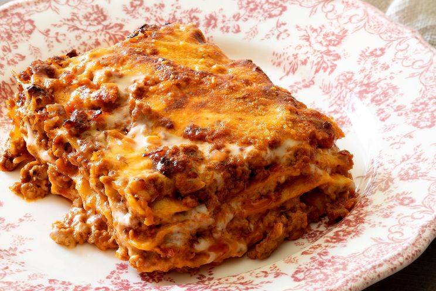

Ricette Italiane
Il meglio della cucina tradizionale italiana
Il meglio della cucina tradizionale italiana
Scopri i sapori autentici dell’Italia con ricette semplici, genuine e piene di tradizione.
La cucina italiana è famosa in tutto il mondo per la sua varietà regionale, l’uso di ingredienti freschi e la passione per il buon cibo.

Un classico intramontabile della tradizione emiliana, perfetto per i pranzi della domenica.
👉 per 4 persone
| Ingrediente | Quantità |
|---|---|
| Lasagne all'uovo | 250g |
| Ragù alla bolognese | 500g |
| Besciamella | 400ml |
| Parmigiano Reggiano | 100g |
Uova, guanciale, pecorino e pepe nero. Un piatto semplice ma ricco di gusto.
Risotto con zafferano e midollo di bue, tipico della tradizione lombarda.
Il dolce italiano per eccellenza, con savoiardi, mascarpone e caffè.